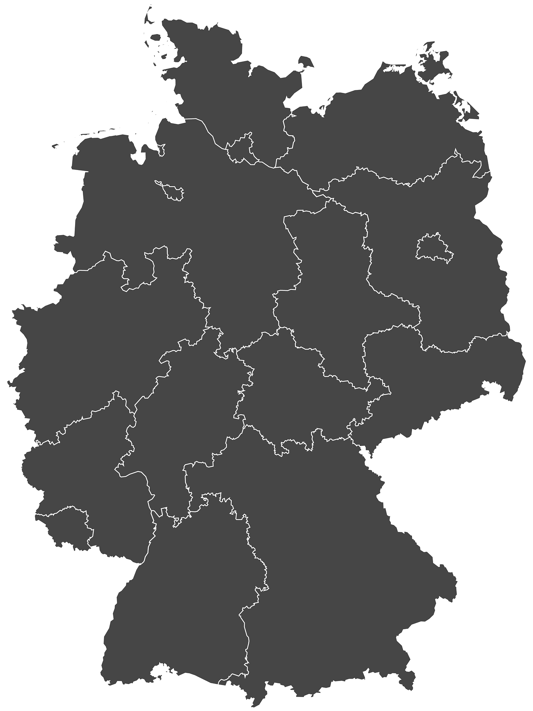
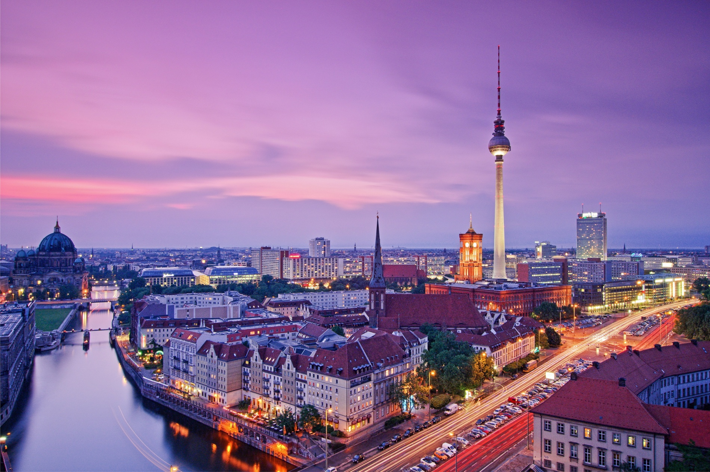

| Info Table | |
|---|---|
| Capital | Berlin |
| Head of State | Olaf Scholz |
| Type of Government | Federal Republic |
| Population | 83.24 million |
| Land Area | 357,588 km² |
| Currency | Euro |



Situation in Germany
Germany in 2022 is stable, but politically confused. Olaf Scholz has replaced Angelika Merkel after 16 years of rule and the SPD governs together with the FPD and die Grünen. A significant contribution to the electoral success of the SPD is the failed corona policy of the CDU/CSU, and many voters have also migrated to right-wing extremist parties such as the AFD. Economically, Germany is battered but in comparison with the international average well awakened. Still, many voters are angry at the government's decision, such as the likely vaccination requirement. A large part of the population hopes to finally defeat the coronavirus after 2 years.
Situation outside Germany
Although Germany is in nato, it has not been involved in any wars since the end of the Afghan war. The atmosphere in the EU is tense due to the military provocations of the Russians on the Ukrainian border. Also, Germany doesn't get along very well with the new American President Joe Biden, since Germany has built a new gas pipeline with Russia. Since Brexit, Germany has taken the lead in the EU ahead of France.
Read More